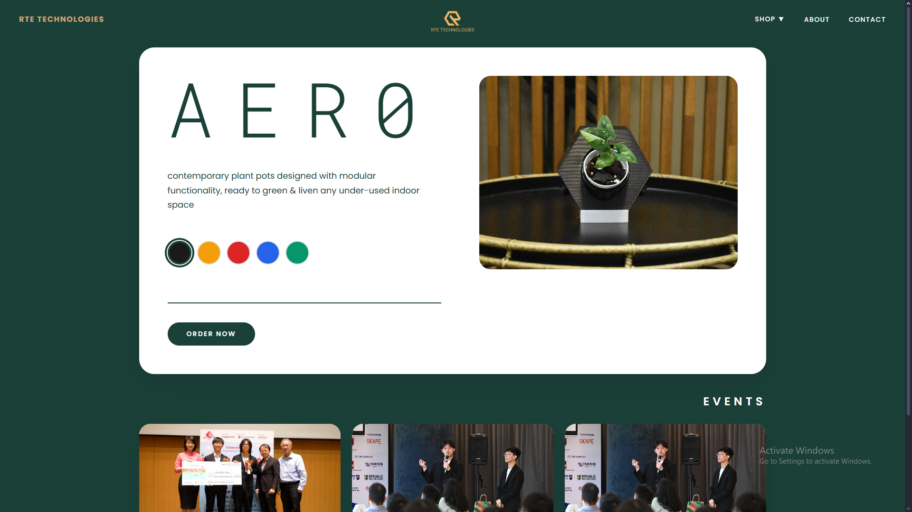
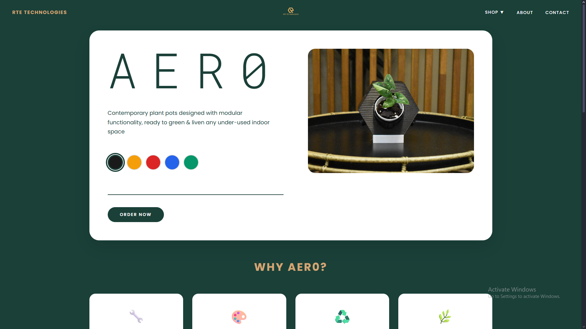
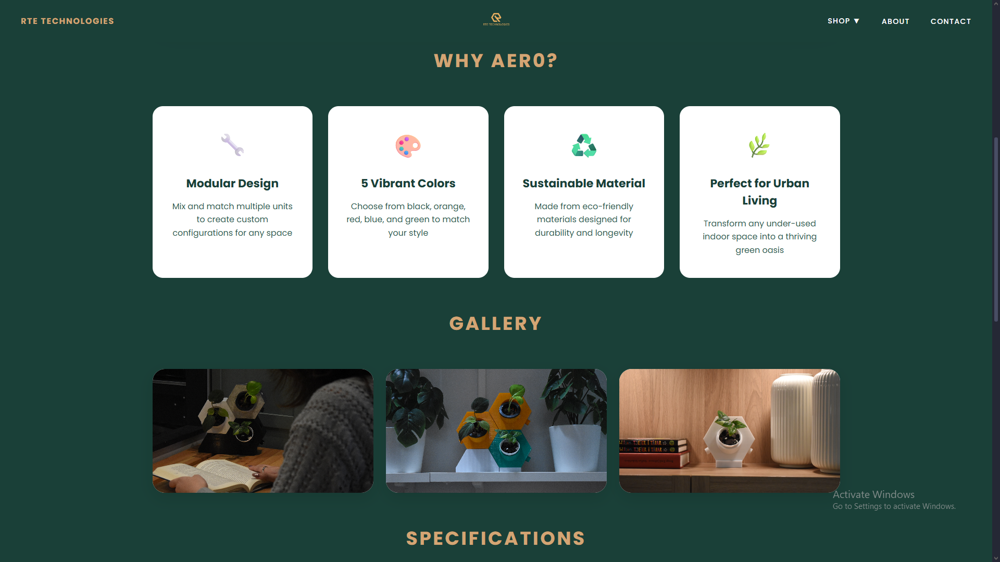

RTE Technologies
A lightweight, responsive website for a Singapore green-tech startup, designed and built for credibility and speed.
- Role
- Web Designer & Developer
- Client
- RTE Technologies (Singapore)
- Timeline
- 4 weeks
- Stack
- HTML, CSS, JavaScript

Overview
A credible digital presence for a green-tech startup.
Designed and built a professional website for RTE Technologies, a Singapore-based startup specializing in sustainable and green technology solutions. The site is their primary digital presence, showcasing products, services and company values to potential clients and investors.
As a startup entering a competitive sector, RTE needed a website that would establish credibility, clearly communicate their mission and effectively present their innovative solutions to stakeholders.
The challenge
Credibility, on a startup budget and timeline.
RTE Technologies faced several challenges as a new player in the sustainable technology space:
- No existing digital presence to attract clients or investors.
- A need to establish credibility and professionalism in a crowded market.
- Complex technical products that needed clear, accessible explanations.
- A limited startup budget, requiring cost-effective solutions.
- Timeline pressure to launch before key investor meetings.
The solution
Vanilla code, polished result.
Created a clean, professional website with vanilla HTML, CSS and JavaScript, keeping costs low while delivering a polished, high-performance result.
“Simple, effective web design doesn't require complex frameworks—sometimes vanilla code is the most elegant solution.”
Clear value proposition
The homepage immediately communicates RTE's focus on sustainable technology.
Product showcase
Dedicated sections highlight key products and services with clear descriptions.
Investor-focused content
Information architecture designed to answer investor questions.
Fast loading
Lightweight vanilla JavaScript ensures quick load times on all connections.
Mobile-responsive
A fully responsive design that works seamlessly on all devices.
SEO optimized
Proper meta tags and semantic HTML for search engine visibility.
Design approach
Professional, sustainable, straightforward.
The design emphasizes professionalism and sustainability while keeping the experience intuitive.
Visual identity
- Clean, modern aesthetic that reflects innovation and sustainability.
- Green color palette reinforcing the company's environmental focus.
- Professional typography for credibility with corporate clients.
- High-quality imagery showcasing technology and environmental themes.
Information architecture
- Homepage: Overview of company mission and key differentiators.
- Products/Services: Detailed but accessible descriptions of offerings.
- About Us: Team, company story and values.
- Contact: Easy ways for clients and investors to reach out.
User experience
- Intuitive navigation with clear call-to-action buttons.
- Smooth scroll animations for a modern feel without being distracting.
- Contact forms strategically placed for lead generation.
- Fast page loads (under 2 seconds) for better user retention.
Technical implementation
Core web technologies, minimal dependencies.
Built with core web technologies for maximum performance and minimal dependencies.
- HTML5: Semantic markup for accessibility and SEO, with proper meta tags for social sharing.
- CSS3: Custom styling with CSS Grid and Flexbox for responsive layouts, and CSS animations for smooth interactions.
- Vanilla JavaScript: Form validation, smooth scrolling and the mobile menu, with no framework bloat.
- Vercel deployment: Fast, reliable hosting with automatic SSL and a global CDN.
- Performance optimization: Image optimization, minified CSS/JS and lazy loading for images below the fold.
Tech stack
Frontend
- HTML5
- CSS3
- JavaScript (vanilla)
Design
- CSS Grid & Flexbox
- CSS animations
- Responsive design
Deployment
- Vercel
- Git version control
- CI/CD pipeline
Key features
Everything a first impression needs.
- Responsive design – adapts to desktop, tablet and mobile with carefully crafted breakpoints.
- Contact forms – easy-to-use inquiry forms with client-side validation for immediate feedback.
- Product gallery – a visual showcase of RTE's technology solutions with descriptive overlays.
- Company timeline – visual storytelling of RTE's journey and milestones.
- Fast loading – optimized assets and minimal dependencies for sub-2-second page loads.
Design process
From discovery to launch.
Discovery & research: Met with RTE leadership to understand their vision, target audience and business goals. Researched competitor websites in the green tech space to find opportunities for differentiation.
Wireframing & design: Created low-fidelity wireframes to establish information hierarchy and user flow, then high-fidelity mockups incorporating RTE's brand colors and desired aesthetic.
Development: Built the site with clean, semantic HTML and modular CSS for easy maintenance. Implemented interactive features with vanilla JavaScript, keeping the codebase lightweight and fast.
Testing & launch: Tested across devices and browsers, optimized performance for fast load times, and deployed to Vercel for reliable, scalable hosting.
Challenges & learnings
You don't always need a framework.
Challenge: Communicating complex technical products in an accessible way without overwhelming visitors.
Solution: Used progressive disclosure: high-level benefits on initial view, with "Learn More" sections for technical details, plus diagrams and visual aids to simplify complex concepts.
Challenge: Building a professional, feature-rich website on a tight startup budget.
Solution: Chose vanilla HTML/CSS/JS over React or other frameworks, eliminating build complexity and hosting requirements, and deployed on Vercel's free tier for excellent performance at no cost.
Challenge: Creating smooth animations and interactions without JavaScript frameworks.
Solution: Used CSS animations and transitions for most visual effects, with vanilla JavaScript only where necessary, giving smooth interactions with minimal code.
Learning: For a content-focused site, vanilla HTML/CSS/JS delivered excellent performance and maintainability without the overhead of React or Vue. Working with a startup client taught me to understand business constraints and priorities, and to evaluate every animation and visual effect for its impact on load time and user experience.
Results & impact
Launched in time, loved by investors.
- Launched before critical investor meetings.
- Used in pitch decks to demonstrate a professional presence.
- Average page load time under 1.5 seconds on 4G connections.
- 100% responsive across all tested devices and browsers.
- Positive feedback from investors on the company's presentation.
- Contact form submissions from potential clients within the first week.
- Lighthouse scores: 95+ Performance, 100 Accessibility, 100 Best Practices.
Screenshots
Website sections.

